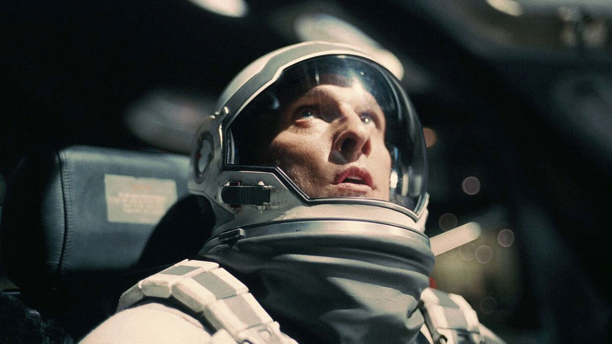
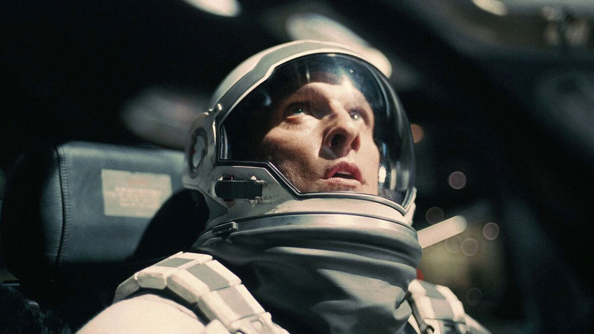
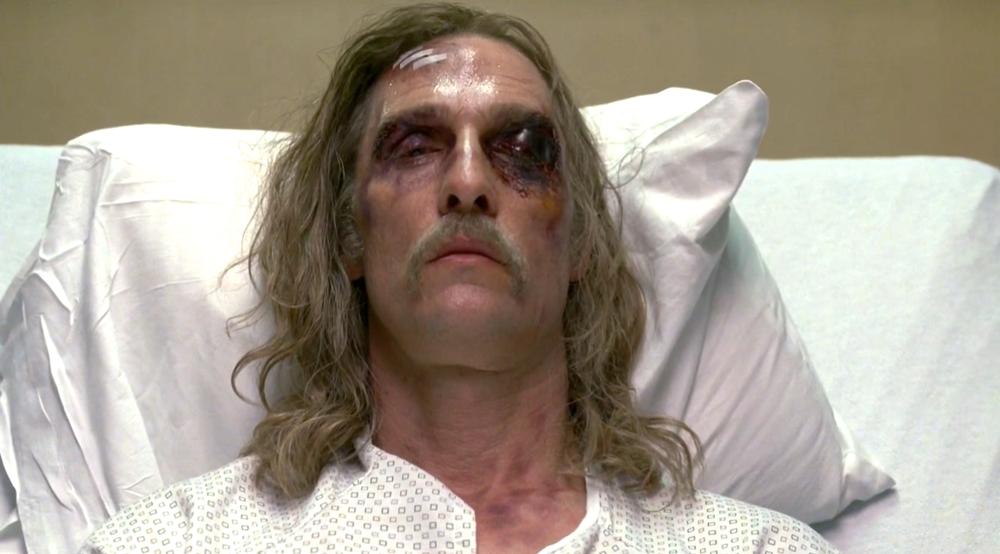
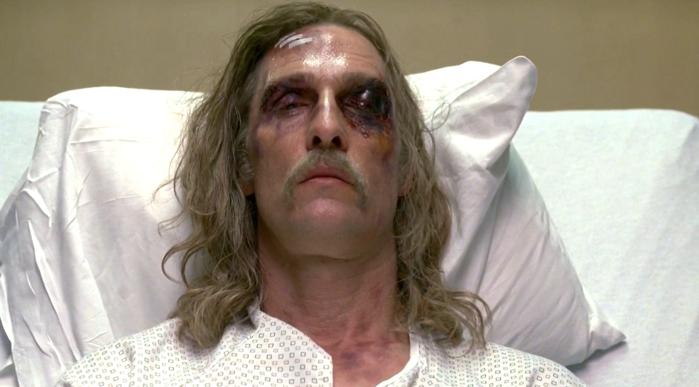

Мои любимые фильмы и сериалы
Рекомендую к просмотру!
Интерстеллар
Джентльмены
 

Наше время на Земле подошло к концу, команда исследователей берет на себя самую важную миссию в истории человечества; путешествуя за пределами нашей галактики, чтобы узнать есть ли у человечества будущее среди звезд.
Один ушлый американец ещё со студенческих лет приторговывал наркотиками, а теперь придумал схему нелегального обогащения с использованием поместий обедневшей английской аристократии и очень неплохо на этом разбогател. Другой пронырливый журналист приходит к Рэю, правой руке американца, и предлагает тому купить киносценарий, в котором подробно описаны преступления его босса при участии других представителей лондонского криминального мира — партнёра-еврея, китайской диаспоры, чернокожих спортсменов и даже русского олигарха.

 

| Год | Страна | Жанр | Режиссер |
| 2014 | US | Фантастика | Кристофер Нолан |
| 2019 | US | Криминал | Гай Ричи |
| 2014 | US | Детектив | Кэри Дзёдзи Фукунага |